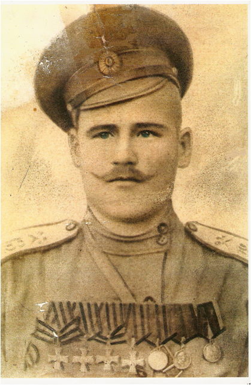

Жаравин Семен Сиверионович
(1888 – 1920)
Полный кавалер Георгиевских крестов всех 4-х степеней.
Родился в 1888 году в д. Еловино Шонгско-Николаевской волости Никольского уезда, впоследствии Плосковского сельсовета Кичменгско – Городецкого района.
По жребию ему выпало идти на военную службу в 1909 году. В 1913 году был награжден светло – бронзовой медалью в память 300 – летия царствования Дома Романовых. Участвовал в боях Первой мировой войны подпрапорщиком 18-го саперного батальона.
Награжден Георгиевскими крестами 4-х степеней и двумя Георгиевскими медалями. Гергиевский крест 4-й степени получил за то, что "будучи за старшего при переправе десанта на понтоне за реку Сан у деревни Кемпа в ночь с 18 на 19 октября 1914 года под сильным ружейным, пулеметным и артиллерийским огнем, командуя судном, с успехом выполнил поручение, причем показал пример отличной храбрости. Ободряя своих товарищей и увлекая их за собой".
Гергиевский крест 3-й степени был вручен ему за подвиг : "Под сильным ружейным и артиллерийским огнем противника 8 декабря 1914 года у города Пинчова произвел взрыв моста через реку Ниду, имевшего важное значение для противника, при чем проявил отличную храбрость и мужество".
Георгиевским крестом 2 степени был награжден за подвиг, который совершил с 3 по 15 мая 1915 года у деревни Соколув, руководя командой рабочих, с явной опасностью для жизни, укрепляя вновь занятую нашими войсками позицию и устанавливая впереди ее искусственные препятствия. Проявил при этом выдающееся самопожертвование и храбрость. В ночь с 25 на 26 июня 1916 года «при захвате нашими войсками позиции в районе деревни Бортники, под сильным ружейным и пулеметным огнем противника, руководя командой рабочих на участке батальона пехотного полка, закреплял позицию, устанавливал искусственные препятствия и исправлял все повреждения, причиняемые неприятельской артиллерией, при чем проявил редкое самопожертвование и мужество, являя пример подчиненным, а быстрой и полезной работой дал возможность сдержать ряд контратак со стороны противника». За этот подвиг был награжден Георгиевским крестом 1 степени.
После войны был в Петрограде, где состоялась Октябрьская революция в 1917 году и затем началась гражданская война. С.С. Жаравин был убит в Петрограде при неизвестных обстоятельствах.
Родился в 1888 году в д. Еловино Шонгско-Николаевской волости Никольского уезда, впоследствии Плосковского сельсовета Кичменгско – Городецкого района.
По жребию ему выпало идти на военную службу в 1909 году. В 1913 году был награжден светло – бронзовой медалью в память 300 – летия царствования Дома Романовых. Участвовал в боях Первой мировой войны подпрапорщиком 18-го саперного батальона.
Награжден Георгиевскими крестами 4-х степеней и двумя Георгиевскими медалями. Гергиевский крест 4-й степени получил за то, что "будучи за старшего при переправе десанта на понтоне за реку Сан у деревни Кемпа в ночь с 18 на 19 октября 1914 года под сильным ружейным, пулеметным и артиллерийским огнем, командуя судном, с успехом выполнил поручение, причем показал пример отличной храбрости. Ободряя своих товарищей и увлекая их за собой".
Гергиевский крест 3-й степени был вручен ему за подвиг : "Под сильным ружейным и артиллерийским огнем противника 8 декабря 1914 года у города Пинчова произвел взрыв моста через реку Ниду, имевшего важное значение для противника, при чем проявил отличную храбрость и мужество".
Георгиевским крестом 2 степени был награжден за подвиг, который совершил с 3 по 15 мая 1915 года у деревни Соколув, руководя командой рабочих, с явной опасностью для жизни, укрепляя вновь занятую нашими войсками позицию и устанавливая впереди ее искусственные препятствия. Проявил при этом выдающееся самопожертвование и храбрость. В ночь с 25 на 26 июня 1916 года «при захвате нашими войсками позиции в районе деревни Бортники, под сильным ружейным и пулеметным огнем противника, руководя командой рабочих на участке батальона пехотного полка, закреплял позицию, устанавливал искусственные препятствия и исправлял все повреждения, причиняемые неприятельской артиллерией, при чем проявил редкое самопожертвование и мужество, являя пример подчиненным, а быстрой и полезной работой дал возможность сдержать ряд контратак со стороны противника». За этот подвиг был награжден Георгиевским крестом 1 степени.
После войны был в Петрограде, где состоялась Октябрьская революция в 1917 году и затем началась гражданская война. С.С. Жаравин был убит в Петрограде при неизвестных обстоятельствах.